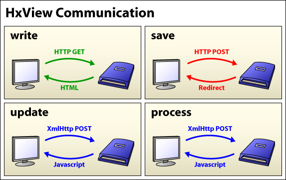
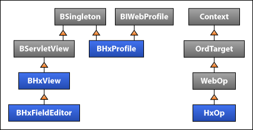

HxView
provides the content viewers and editors for working with the active objects.
As you have probably guessed, HxView is the Hx equivalent of
WbView. HxView is designed to produce and interact
with a snippet of HTML. BHxProfile takes one
or more HxViews, adds some supporting markup plus some chrome, and
produces a complete HTML page.
|  |
From the diagram, a HxView:
BWbView.doLoadValue().
BWbView.doSaveValue().
HxView responsible for that behavior. Details on each method
can be found below. The HxProfile is
responsible for building the containing HTML around each HxView.
The details of each method can be found at the end of this document, but lets take a simple example to walk through the API:
public class BFooView extends BHxView
{
public static final BFooView INSTANCE = new BFooView();
public Type getType() { return TYPE; }
public static final Type TYPE = Sys.loadType(BFooView.class);
protected BFooView() {}
public void write(HxOp op) throws Exception
{
BFoo foo = (BFoo)op.get();
HtmlWriter out = op.getHtmlWriter();
out.w("Current name: ").w(foo.getName()).w("<br/>");
out.w("<input type='text' name='").w(op.scope("name")).w("'");
out.w(" value='").w(foo.getName()).w("' /><br/>");
out.w("<input type='submit' value='Submit' />");
}
public BObject save(HxOp op) throws Exception
{
BFoo foo = (BFoo)op.get();
foo.setName(op.getFormValue("name"));
return foo;
}
}
// Register this view on BFoo in module-include.xml
<type name="FooView" class="bar.BFooView">
<agent><on type="bar:Foo"/></agent>
</type>
Assuming the current name in our BFoo object is "Peter Gibbons",
the above code will produce the following HTML (ignoring the profile):
Current name: Peter Gibbons<br/>
<input type='text' name='name' value='Peter Gibbons' /><br/>
<input type='submit' value='Submit' />
If you are familiar with Niagara AX and HTML, this should be pretty straightforward. Let's walk through it though. Here's the class hierarchy of the main hx components:
|  |
The first thing to note is that
BHxView extends
BServletView, which extends
BSingleton, which requires a public static final
INSTANCE variable for all concrete implementations. If you have ever
programmed Servlets before, you'll know that a Servlet must be re-entrant, and
HxViews follow the same model. The INSTANCE
object is what will be used to handle requests. (The protected
constructor is a convention used to enforce the singleton design pattern).
Since HxView can't maintain state while its doing its thing, we
need to stash stuff somewhere - thats where HxOp
comes in. We won't get into the details of HxOp yet, just be aware
that anything I need to know about my current request or response is very
likely accessible via the op.
Let's move on to the lifecycle of an HxView. The first thing a
view will do is render its HTML to the client. This occurs in the
write() method. By default Hx documents use the XHTML 1.0 Strict
DOCTYPE. So you are encouraged to use valid XHTML in your write
method. Since HxViews are designed to be chromable, and
compositable, you'll also only write the markup that directly pertains to this
view in your write method. Here are the things you should take
note of about write:
BWbView.doLoadValue()
op.scope() when writing a form
element name. We'll get to why you should do that in 'Writing Reusable
HxViews' down below.
<input type='button' onclick='hx.save' />
The Hx framework will take care of building the form tag so this request gets routed to
your save() method.
HxOp.addOnload(String) instead of using a
<script/>. This allows the HxView to be reusable in a javax.baja.hx.Dialog or in another
case that requires putting the results of the write method in a POST.
Ok, my name is not "Peter Gibbons", so we need to be able to save something
else back to the station. This is just as easy as writing my HTML, you simply
implement a save method on your view. The request will
automatically be routed, and all form data will be available from the
HxOp.getFormValue() method.
So now if I view our example view in my browser, enter "Michael Bolton" and hit "Submit", the page will refresh to display:
Current name: Michael Bolton<br/>
<input type='text' name='name' value='Michael Bolton' /><br/>
<input type='submit' value='Submit' />
Technically, what happens, is the POST request gets routed to
save, then Hx responds with a redirect back the same location.
This forces the page contents to be requested on a GET request, avoiding
double-posting problems.
Hx is designed to allow for reusing and nesting HxViews within
other HxViews. To accomplish this, we need some type of scoping
mechanism to avoid naming conflicts. Luckily, Hx handles this quite cleanly.
Each HxOp that gets created has a name (explicit or auto-generated),
which when combined with its parent tree, creates a unique path to each
"instance" of a HxView. So if you take the this code:
public void write(HxOp op) throws Exception
{
HtmlWriter out = op.getHtmlWriter();
out.w("<input type='text' name='").w(op.scope("foo")).w("'/>");
...
}
public BObject save(HxOp op) throws Exception
{
String foo = op.getFormValue("foo");
...
}
The resulting HTML could look something like this:
<input type='text' name='uid1.editor.uid5.foo'/>
HxOp.getFormValue() will automatically handle the "unscoping"
for you. This allows any HxView to be nested anywhere without
knowing its context. However, this only works if you follow a few rules:
HxOp.make() - there
should always be a 1:1 ratio between HxOps and
HxViews. See "Managing Subviews" below.
HxOp.scope() when writing the name
attribute for a form control.
HxOp, names are
created by appending the current counter value to a string ("uid0",
"uid1", etc). So its very important that the order in which
HxOps are created is always the same in
write/save/update/process so the produced paths will always the same.
Otherwise views will not be able to correctly resolve their control values.
Hx does not contain any notion of containment, so composite views are responsible for routing all write/save/update/process requests to its children:
public class BCompositeView extends BHxView
{
public void write(HxOp op) throws Exception
{
BSubView.INSTANCE.write(makeSubOp(op));
...
}
public BObject save(HxOp op) throws Exception
{
BFoo foo = BSubView.INSTANCE.write(makeSubOp(op));
...
}
public void update(HxOp op) throws Exception
{
BSubView.INSTANCE.update(makeSubOp(op));
}
public boolean process(HxOp op) throws Exception
{
if (BSubView.INSTANCE.process(makeSubOp(op)))
return true;
return false;
}
private HxOp makeSubOp(HxOp op)
{
BFoo foo;
...
return op.make(new OrdTarget(op, foo));
}
}
Don't forget to always create a sub-op to your child views so the Hx framework can strut its stuff.
Another feature of the hx framework is a transparent transition from the
Workbench environment to the hx environment. For example, if you have created
a WbView called WbFooView, all references to that
view can be made to transparently map to your hx implementation. You just need
to register your HxView directly on the WbView, and
expect the input argument to be the same type as loaded into the
WbView:
// Register WbView agents directly on the View
<type name="HxFooView" class="foo.BHxFooView">
<agent><on type="foo:WbFooView"/></agent>
</type>
public void write(HxOp op)
throws Exception
{
// Assume object is what the corresponding WbView would
// receive in its doLoadValue() method.
BFoo foo = (BFoo)op.get();
...
}
Then this ord will work correctly in both environments:
station:|slot:/bar|view:foo:WbFooView
Also note that if your view is the default view on that object, the default ord will choose the correct view as well:
station:|slot:/bar
Similar to creating WbView agents, a BHxPxWidget
is responsible for creating an hx representation of a BWidget used
in a Px document. Note that BHxPxWidget works differently from a
typical HxView in that op.get() will return the
BWidget that this agent is supposed to model. The widget will
already be mounted in a BComponentSpace and any bindings will
already be active and leased. Also note that in module-include.xml
this type should be registered as agent on the BWidget it is supposed to model.
// Register PxWidget agents directly on the Widget
<type name="HxPxLabel" class="com.tridium.hx.px.BHxPxLabel">
<agent><on type="bajaui:Label"/></agent>
</type>
public void write(HxOp op)
throws Exception
{
// OrdTarget is the widget we want to model
BLabel label = (BLabel)op.get();
HtmlWriter out = op.getHtmlWriter();
out.w(label.getText());
}
Hx supports file uploading by using the multi-part encoding for form submission. This capability is only supported for standard form submissions. You may upload one or more files along side the rest of your form. The files are stored in a temporary location on the station, and if not moved, will be automatically deleted at the end of the request.
op.setMultiPartForm() to change form encoding.
op.getFile(), where the
control name designates which file you want.
Let's take an example:
public void write(HxOp op) throws Exception
{
op.setMultiPartForm();
out.w("<input type='file' name='someFile' />");
}
public BObject save(HxOp op) throws Exception
{
BIFile file = op.getFile("someFile");
FilePath toDir = new FilePath("^test");
BFileSystem.INSTANCE.move(file.getFilePath(), toDir, op);
return op.get();
}
This code will upload a file to a temporary file, accessible as "someFile", and move it to another location so that it will not be deleted at the end of the request.
Write is used to output the HTML markup for the current view.
HxViews should only write the markup that directly pertains to
itself. Avoid writing any containing markup - this is handled by the parent
view or the profile. Especially avoid writing outer tags like
html, head, and body - these are
handled by the profile.
There is only one form tag in an hx page, and is written by the
profile. HxViews should never write their own form
blocks. So by design, the entire page content is encoded for save
and Events. Naming collisions are handled automatically using the
HxOp scoping rules (see 'Writing Reusable HxViews' above for more
info on scoping).
The write method is always called on an HTTP GET request. However,
if its written correctly (which typically means escaping quotes properly), it
may be reused by update or process if it makes sense.
Save is used to save changes made from the view back to the target object. This
is usually just a standard response to a form post, where the form values are
accessed using HxOp.getFormValue(). Views on BSimples
should return a new instance based on their new value. Views on
BComponents should modify the existing instance and return that
instance.
After a save is handled, a redirect is sent back to the
browser to the current location. This is used to refresh the current page
values, but more importantly to avoid double-posting problems. Content is
always be requested on a GET request (and handled by write). You
may choose to redirect back to a different URL using the
HxOp.setRedirect() method.
The save method is always called on a standard HTTP POST form
submit request. Both standard url-encoded and multi-part forms are supported.
See 'Uploading Files with Multi-part Forms' above for info on multi-part forms.
Update is automatically called periodically on all views if at least one
view was marked as dynamic (via HxOp). This is a background
request made using JavaScript and XmlHttp. The content returned to the
browser must be executable JavaScript. For example:
public void write(HxOp op) throws Exception
{
op.setDynamic();
HtmlWriter out = op.getHtmlWriter();
out.w("<div id='time'>Current Time</div>");
}
public void update(HxOp op) throws Exception
{
HtmlWriter out = op.getHtmlWriter();
out.w("var elem = document.getElementById('time');");
out.w("elem.innerHTML = '").w(BAbsTime.now()).w("';");
}
Here, after the page is initially written, the browser will poll the station
every five seconds running update on all the views. So this code
will simply update the current time each time the station is polled.
Process is used to handle non-update background requests. A process request
is targeted and serviced by a single HxView. The default
implementation for process handles routing events to the correct view. See
Events.
Note: If you override process, you must call super or event routing will fail.